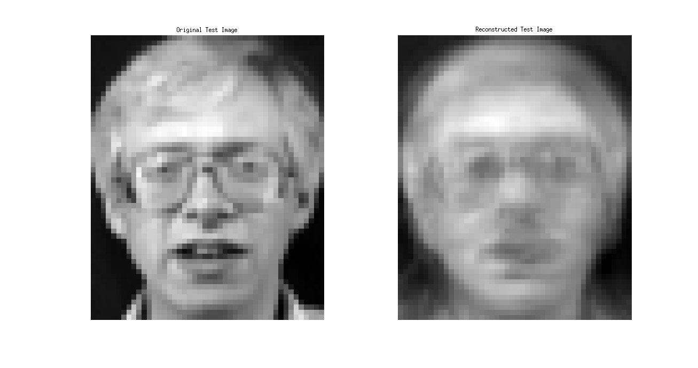

EE779: NMF_assignment
Contents
Kalpesh Patil (130040019)
Note that some unnecessary print statements in the original implementation file of NMF have incresed length of the report. Ignore them.
Q1 and Q2
Required data was downloded. Code was studied to understand NMF implementation.
Q3
nmf_kalpesh
Reading in the images...
[1/40][2/40][3/40][4/40][5/40][6/40][7/40][8/40][9/40][10/40][11/40][12/40][13/40][14/40][15/40][16/40][17/40][18/40][19/40][20/40][21/40][22/40][23/40][24/40][25/40][26/40][27/40][28/40][29/40][30/40][31/40][32/40][33/40][34/40][35/40][36/40][37/40][38/40][39/40][40/40]
Reading in the images...
[1/40][2/40][3/40][4/40][5/40][6/40][7/40][8/40][9/40][10/40][11/40][12/40][13/40][14/40][15/40][16/40][17/40][18/40][19/40][20/40][21/40][22/40][23/40][24/40][25/40][26/40][27/40][28/40][29/40][30/40][31/40][32/40][33/40][34/40][35/40][36/40][37/40][38/40][39/40][40/40]
train_mse =
0.0095
test_mse =
0.0146
myImg_mse =
0.1568
We can notice that MSE in training image is low compared to that of test image and myImg. Training image belong to the same space for which Components (Non negative activations) were extracted. Therefor error is less and reconstruction is better. Test image do not belong the same space, but it still contain faces with similar backgrounds, lightening conditions etc. Hence it still be explained with basis vectors of NMF of training data upto some extenct. The error is found to be greater that train image but lesser than myImg, which is expected. We can also compare reconstructed faces. Reconstruction is worse than training image but better than myImg. MyImg neither belongs training space, nor does to a similar space. The background, lightening conditions etc are drastically different. Hence the error is very large and reconstruction is worst amongst all. In fact we can't even notice a face in it.
Q4
Only 25 basis
nmf2_kalpesh
Reading in the images...
[1/40][2/40][3/40][4/40][5/40][6/40][7/40][8/40][9/40][10/40][11/40][12/40][13/40][14/40][15/40][16/40][17/40][18/40][19/40][20/40][21/40][22/40][23/40][24/40][25/40][26/40][27/40][28/40][29/40][30/40][31/40][32/40][33/40][34/40][35/40][36/40][37/40][38/40][39/40][40/40]
Reading in the images...
[1/40][2/40][3/40][4/40][5/40][6/40][7/40][8/40][9/40][10/40][11/40][12/40][13/40][14/40][15/40][16/40][17/40][18/40][19/40][20/40][21/40][22/40][23/40][24/40][25/40][26/40][27/40][28/40][29/40][30/40][31/40][32/40][33/40][34/40][35/40][36/40][37/40][38/40][39/40][40/40]
train_mse =
0.0100
test_mse =
0.0149
myImg_mse =
0.0907
 The error while training in each iteration is greater than before. Currently we are using less numbe of basis, hence the error is more. Also we need more number of iterations to reach the same training errror. In reconstruction the error pattern is still the same (train < test < myImg). There hasn't been much increase observed in MSE when lesser number of basis vetors are used. Rather MSE is improved for myImg. This observation is different than PCA
Q5. Comparison of PCA and NMF
I used the same images from train and test dataset which were used earlier in PCA assignment. (PCA images not included in this report as they were already included in the report of PCA assignment) After comparing PCA and NMF it is oserved that PCA performs a lot better in terms of reconstruction. The reconstructed faces in case of PCA are better than that of NMF for train images. We can compare NMF and PCA as follows
- Eigenfaces in PCA are difficult to interprete, while the basis vectors in NMF are easier to interprete and can be associated to different structures found in the image
- There doesn't exist any nonnegative constraint in PCA
- NMF is that it usually produces a sparse representation of the data, which is observed in activation vectors of images listed above.
- Overall performance for reconstruction is better in case of PCA than NMF. But NMF has performed better for myImg, which implies PCA fails if input not belonging to the subspace is given, while NMF performs better in that case. But for images belonging to the give space (or similar space) PCA is better than NMF.